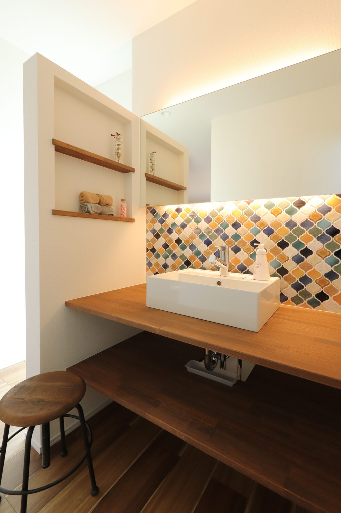
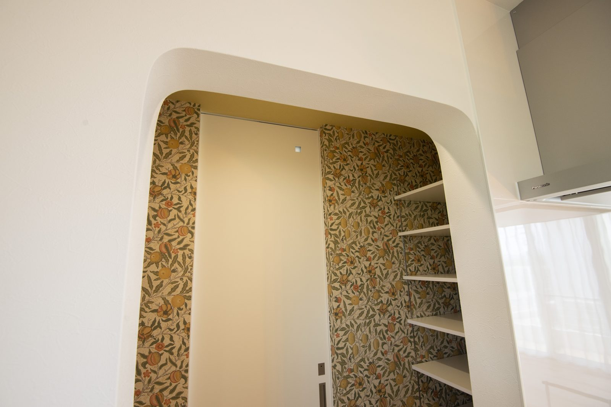
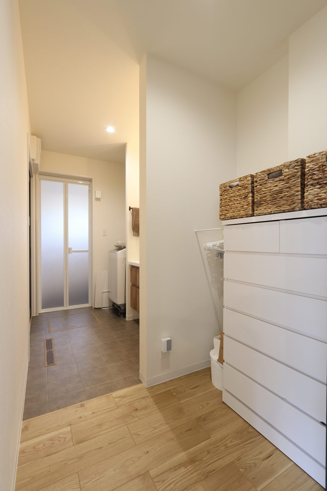

収納を増やしたのに、机や床に物が残る。原因は広さだけとは限りません。使う場所としまう場所が離れていると、片づけるたびに移動が必要になります。
旧記事「新築の収納の考え方」でお伝えしたのは、楽に戻せる仕組みをつくることでした。今回は奈良で新築を考える方に向け、間取りづくりに役立つ内容へ書き直します。

使う物は、使う場所の近くへ
写真の机と棚のように、作業する場所と物を置く場所が近いと、座ったまま手が届きます。勉強道具、書類、充電する機器など、そこで何を使うかを決めてから棚を考えます。
間取りに書き込む、三つのこと
何をしまうか
持ち物を種類ごとに並べる
どこで使うか
使う部屋と動きを書き込む
誰が戻すか
家族の手が届く高さにする
棚は、持ち物の寸法から決める
箱、掃除機、季節用品は、高さも奥行きも違います。よく使う物を測り、扉を開けて取り出せるかまで確認してください。棚を深くしても、奥の物に手が届かなければ使いにくくなります。

この収納は、棚だけでなく真ん中に歩く場所があります。収納の面積には通路も含まれます。同じ広さでも棚の長さは変わるため、畳数だけで収納量を比べないことが大切です。
家族が戻せる高さにする
子どもの通学用品を高い棚に置くと、毎回大人の手が必要になります。朝に持ち出す物は、帰宅後にも戻しやすい位置へ。家族それぞれに、迷わず使える置き場所をつくります。

洗面台の隣の棚は、使う場所に物を寄せる考え方の一例です。タオルや日用品を置くなら、水がかかる範囲と掃除のしやすさも確認します。見せたくない物には、箱や扉を組み合わせる方法があります。
仮置きする場所を、今の住まいで探す
間取りの打ち合わせ前に、今の住まいで物を仮置きする場所を写真に残してください。玄関のかばん、食卓の郵便物、洗面所の着替え。その場所に、収納を計画する手がかりがあります。
造りつけの棚は後から動かしにくい設備です。先に持ち物を整理し、必要な場所だけ設けましょう。建築実例や、家づくりの予算の考え方も参考にしてください。
よくある質問
収納は床面積の何割あれば足りますか？
一定の割合だけでは決められません。持ち物の量と寸法、使う場所を整理し、棚や通路を含めて確認します。
奥行きが深い棚ほど便利ですか？
小物には深すぎる場合があります。奥の物を取り出せるかを考え、収納する物に合わせて棚の奥行きを決めます。
将来の持ち物が分からなくても計画できますか？
今ある物を出発点にして、棚の高さを変えられる場所や、使い方を変えられる余白を設ける方法があります。

奈良の工務店シバサンホームで、
土地さがし・資金計画・打合せの窓口をしています。
モットーはスピード・誠実さ・楽しさ。